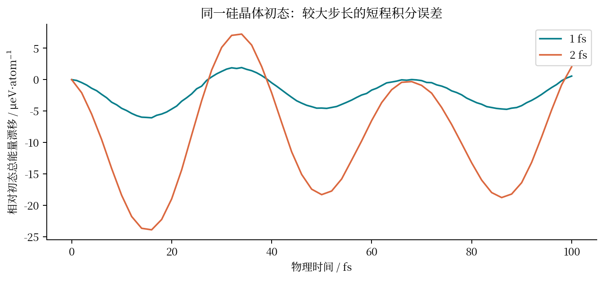
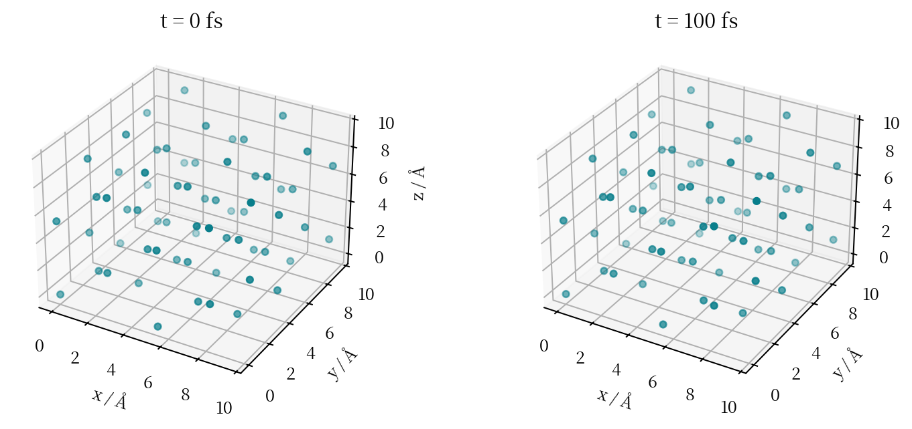
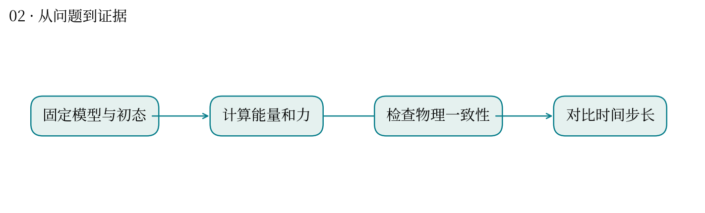
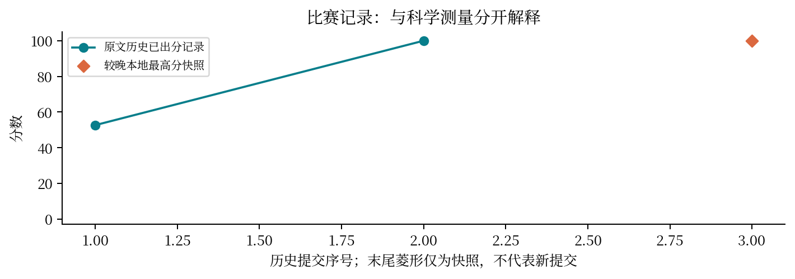

让 AI 给原子算受力，再检查这部原子电影是否可信。
最高分快照：100.0 · 2026-10-12T01:11:24+08:00
分子动力学把原子位置交给势能模型，由能量对坐标的导数得到力，再推进下一时刻。步长越大通常越省计算，但积分误差也可能增大。
固定 DPA4-Mini，计算周期硅晶体的能量和力；检查对称性与有限差分；对比 1 fs 与 2 fs 的短程轨迹。
本次从 work-v2 原始轨迹重画能量漂移和原子位置。文件记录的最大漂移为 6.076×10⁻⁶ 与 2.391×10⁻⁵ eV/atom；2 fs 约为 1 fs 的 3.94 倍。结论仅适用于这段短轨迹。
短时守恒不等于势能模型在所有材料上准确。相同初态、物理时长和单位是比较步长的前提。第一轮 52.65 分，补齐实际执行证据后得到 100 分。
像你验证基因组分析流水线：先确认软件真的运行，再看输出指标是否满足生物学和数值上的自洽；流水线跑通与结论正确要分开检查。
评分变化与过程证据补全一致，但仅凭两次提交不能拆出每个证据项的独立因果贡献。
播放速度用于展示，物理时间以画面标注为准；没有补造中间帧。




| attempt | 提交时间 | 分数 | 状态 |
|---|---|---|---|
| 51019 | 10-10 20:54:30 | 52.65 | 已出分 |
| 51134 | 10-10 21:26:25 | 100.0 | 已出分 |
源文件 SHA256 见 证据清单；用 scripts/build.py 重建图表。